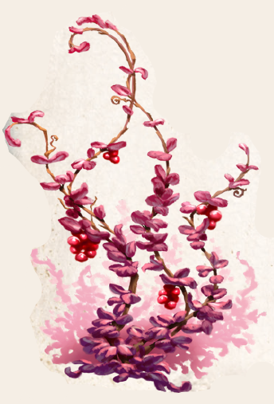

Blutblatt schätzt Orte, an denen über lange Zeit astrale Kräfte frei werden und ähnelt darin Mindergeistern. Ungeachtet von Klima und Jahreszeit gedeiht die Kletterpflanze mit ihren kleinen purpurnen Blättern und roten Beeren an solchen Stellen. Zu regelrechten Hecken wächst es an entlegenen magischen Orten heran, die weder Tier noch Mensch leicht besuchen können. Mancherorts folgen die Ranken sogar merkwürdigen Wuchsrichtungen, in denen Kundige magische Schriftzeichen oder orakelartige Wegweisungen zu erkennen meinen. Gerade Druiden und Töchter Satuarias schätzen Blutblatt sehr, einerseits als zu Kränzen geflochtenem Schmuck, der auf dem Kopf oder um Hals und Arme getragen nahezu unbegrenzt haltbar ist. Andererseits nutzen gerade Druiden die Kraft der Pflanze bei der Auslotung günstiger Stellen für manchen Ritualaufbau. Denn werden Zweige in den Boden gesteckt, können sie selbst feine magische Ströme oder Präsenzen erspüren - etwas, das selbst arkan unbegabte Wesen nutzen können, denn mangelt es an astraler Kraft, vertrocknet die Ranke innerhalb weniger Stunden. Dauert dieser Prozess jedoch wesentlich länger oder wurzelt sie gar, ist dies ein sichtbarer Hinweis auf eine magische Präsenz. Auch in der Alchimie wird Blutblatt als Indikator für die Magiesättigung in Tränken eingesetzt.
Konzentrierte, an Artefakte gebundene Astralenergie meidet die Pflanze hingegen. Um solche Stellen bilden die Kletterranken bisweilen verräterische Lücken, ja kreisrunde Löcher. Noch stärker reagiert das Blutblatt auf dämonische Präsenzen, deren Gegenwart die Pflanze binnen weniger Herzschläge verdorren lassen.
Alternative Namen: Gnadenstrauch
Verbreitung:
Landschaftstyp: alle
Regionen: eher selten an schwach astral durchdrungenen Orten
Suchschwierigkeit: -1
Bestimmungsschwierigkeit: -1
Anwendungen: 1/1/2/2/3/3
Wirkung:
Roh:
Berührung: bei Zauberern: nährt sich von der abstrahlenden Astralenergie.
So lange direkter Kontakt mit dem Körper besteht und der Zauberer über AsP verfügt, ist die Pflanze unbegrenzt haltbar.
Der Zauberer verliert durch andauernden Kontakt jeden Tag 1 AsP.
Einatmung: keine
Verzehr: keine
Verarbeitet: siehe Rezepte
Preis: 3 / 7 Silbertaler
Rezepte:
Pflanzliche Hilfsmittel: Blutblatt kann als „besonders geeignete Gerätschaft“ bei Ritualen verwendet werden, allerdings müssen dennoch die Kosten in Höhe von 50 S aufgewandt werden, Blutblattkranz
Volksbrauchtum: Indikator für Hexenflüche, Beherrschungsmagie, dämonische Besessenheit u. ä. bei profanen Personen.
Hilfs- und „Heilmittel“ der Inquisition, die Blutblattkränze für die Jagd nach Dämonenbündlern verwendet: Die Verdächtige wird mit der Pflanze gefesselt und in ein Gewässer geworfen.
Wenn sie sofort wieder auftaucht, weil die Ranke augenblicklich verdorrt, ist sie eine Dämonenbündlerin.
Muss die Verdächtige sich selbst von der Ranke befreien und schwimmt erst halbtot ans Ufer, so ist sie unschuldig.
Im Volksglauben auch als Gnadenstrauch bekannt, der Zauberer angeblich spontan von ihrem „Madafluch“ heilen kann.
Haltbarkeit:
Roh: bei Kontakt mit Astralenergie unbegrenzt, sonst bis zu 30 Minuten.
In der Nähe von dämonischen Einflüssen innerhalb 1 KR verdorben.
Verarbeitet: Blutblatt hat nur im rohen, lebenden Zustand eine Wirkung.
Die Pflanze benötigt keine Wurzeln zum Überleben, lediglich eine schwache Astralquelle und unbeschädigtes Blattwerk sowie Stängel.